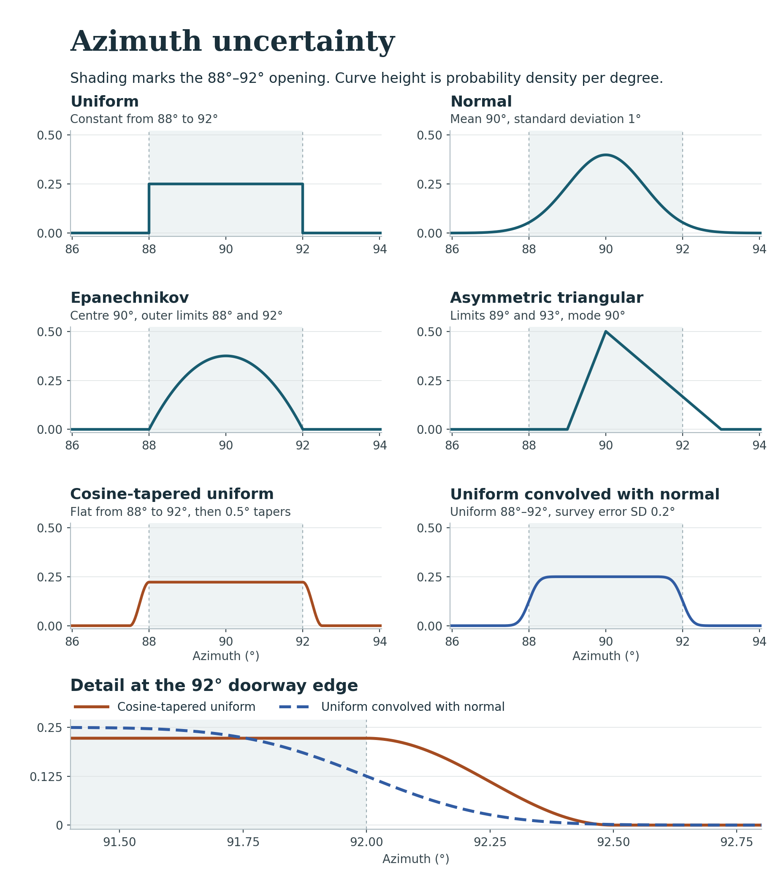

skyscapeR 2.0.9012
Represent uncertainty in a measured orientation before comparing it with other bearings or transforming it to declination.
az.pdf(
az,
unc = NULL,
pdf = "normal",
name,
.res = 0.01,
.cutoff = 1e-05,
verbose = TRUE,
taper = NULL,
survey.sd = 0.5,
lower = NULL,
upper = NULL
)
az |
True bearings clockwise from north, in degrees. For triangular, the preferred bearing (mode). |
unc |
One width or one per observation. Standard deviation for normal, outer half-width for uniform, Epanechnikov or symmetric triangular, and core half-width for tapered uniform or uniform convolved with normal. Omit when supplying triangular limits. See 'Choosing a measurement model'. |
pdf |
One measurement family per call. See 'Choosing a measurement model'
for all six names. The default is |
name |
Optional labels in the same order as the measurements. |
.res |
Spacing of the output bearing grid in degrees. Default 0.01. |
.cutoff |
Minimum density retained on the output grid. Default |
verbose |
Logical. Display progress or informational messages. Default |
taper |
Outer extension on each side of a tapered uniform core, in degrees.
Required for |
survey.sd |
Standard deviation of independent bearing or declination
error, in degrees, for |
lower, upper |
The two bounding directions of a triangular model, in degrees.
Supply both and omit |
Azimuth is circular. Curves wrap across north before the density-height
cutoff is applied. For an asymmetric triangle, the clockwise arc from lower
to upper must include az and be shorter than a full turn.
For example, limits 358 and 3 enclose a mode of 0. For the four new families,
the field interval (including both cosine tapers, if used) spans at most one
turn. An aperture convolved with Gaussian survey error can still have tails
across the full circle. The grid starts at zero and ends before 360. Each
measurement is retained separately. Trimming does not renormalise the stored
ordinates. Choose a grid fine enough to resolve the narrowest shoulder.
A skyscapeR.pdf list. The data component contains one data frame per measurement, in input order, with azimuth x in degrees and density y. The metadata record the measurements, names, uncertainties, distribution type and numerical settings.
All widths and limits are in degrees. Choose the family from the evidence for the sightline and the survey. The examples below refer to a doorway spanning 88 to 92 degrees as seen from the observing position.
"normal"A central estimate with symmetric, approximately Gaussian
error. unc is one standard deviation. Bearings farther from the centre
remain possible. Use this for repeated readings or a survey error model that
supplies a standard deviation. At a centre of 90 and unc=1, about
95.45 percent of the unwrapped probability lies between 88 and 92.
"uniform"Every sightline within the stated limits receives equal
weight. The density is zero beyond them. unc is the half-width, so
az=90, unc=2 gives an opening from 88 to 92. Use this when the two
edges are defensible limits and no direction within the opening is preferred.
"epanechnikov"A preferred central axis with firm limits.
Density decreases parabolically to zero at the limits and is zero beyond them.
unc is the outer half-width. Use unc=2 when bearings closer to
90 are more plausible and 88 and 92 are the limiting sightlines.
"tapered_uniform"An equally plausible core with approximate
edges. unc gives the core half-width. taper is the additional
width on EACH side over which a half-cosine falls smoothly to zero. With
unc=2, taper=0.5, the whole 88–92 interval, including its edges,
has the same density. The outer limits are 87.5 and 92.5. About 11.1 percent of
the mass lies outside the core. Use this when field evidence supports a finite
margin beyond both recorded edges.
"triangular"A preferred bearing (the mode) and defensible
limits. Density falls linearly from the mode to each outer limit. Use this
when one side of a reconstructed axis is less certain. For example,
az=90, lower=89, upper=93 allows a longer tail towards higher bearings.
The mode may be at either limit for a one-sided triangle. Supplying only
unc gives a symmetric triangle with that half-width.
"uniform_normal"An equally weighted opening whose measured
bearing has an independent, additive, zero-mean Gaussian error.
unc is the opening half-width and survey.sd is the standard
deviation of that error. The default is 0.5 degrees. Supply a survey-specific
estimate when available. The convolution rounds the profile on both sides of
each nominal edge and has tails beyond it. With unc=2, survey.sd=0.2,
about 4.0 percent of the mass lies outside 88–92. Use this when the angular
opening and the error in its bearing can be estimated separately.
A standard deviation, an outer half-width and a core half-width express different field judgements. For example, passing 2 as a normal standard deviation gives a much wider model than interpreting 88 and 92 as two standard deviations from 90.

The 2.0.9011 family checks cover analytic profiles, circular rotation, soft-edge limits and simulation reuse. Build 2.0.9006 passed all 173 original D01 assertions, including 0.005-degree samples across north and the broad-width periodic density cases. See D01 validation in the technical manual.
Silva, F (2020) A probabilistic framework and significance test for the analysis of structural orientations in skyscape archaeology Journal of Archaeological Science 118, 105138. \Sexpr[results=rd]{tools:::Rd_expr_doi("10.1016/j.jas.2020.105138")}
coordtrans, spd, hpdi, randomTest, dec.pdf, modelTest
opening <- az.pdf(90, 2, pdf="uniform")
axis <- az.pdf(90, 1, pdf="normal")
bounded <- az.pdf(90, 2, pdf="epanechnikov")
soft <- az.pdf(90, 2, pdf="tapered_uniform", taper=0.5)
skew <- az.pdf(90, pdf="triangular", lower=89, upper=93)
surveyed <- az.pdf(90, 2, pdf="uniform_normal") # survey SD defaults to 0.5 degrees
precise <- az.pdf(90, 2, pdf="uniform_normal", survey.sd=0.2)
north <- az.pdf(0, pdf="triangular", lower=358, upper=3)
plot(surveyed)